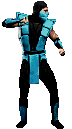

-
SubZero
Gelo
História
O personagem é descrito como formidável e que possui a inata habilidade de controlar o gelo de diversas formas, bem como sua rivalidade com Scorpion.
-
Scorpion
Fogo

História
Hanzo Hasashi, um dos melhores guerreiros do clã japonês Shirai Ryu. Após ser assassinado por Sub-Zero, um membro de um clã rival de assassinos chineses conhecido como Lin Kuei, Scorpion torna-se um fantasma resplandecente residente no inferno que busca vingança contra os responsáveis pela destruição de seu clã e a morte de sua família
-
Rayden
Raio

História
Desde os primórdios do Reino da Terra, Raiden é seu protetor. Ele lutou contra o corrompido deus ancestral Shinnok, que desejava tomar para si o lugar de seus companheiros os outros deuses anciões em uma guerra que ameaçava destruir todos os reinos
-
Liu Kang
Artes Marciais
História
Na realização do torneio Mortal Kombat, Liu Kang encontra o astro decadente de filmes de ação, Johnny Cage - a fim de provar para o mundo que não era uma fraude - e a oficial das Forças Especiais dos EUA, a tenente Sonya Blade - que busca prender (exterminar por vingança) o líder de uma rede de criminosos mercenários, Kano